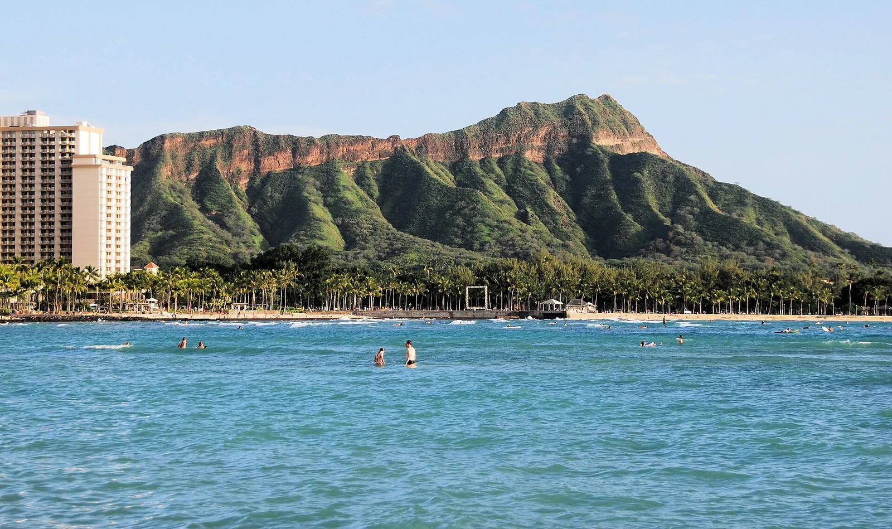

Waikiki — Honolulu
Hawaï (USA) · surf

Le berceau du surf moderne : de longues vagues douces parfaites pour apprendre, face aux gratte-ciels d'Honolulu.
- Lieu
- Hawaï (USA)
- Niveau
- Débutant
- Activités
- surf
- Type d'eau
- Mer / océan
- Coordonnées
- 21.28, -157.83 (position approximative du secteur)
Dangers à connaître
- Très fréquenté.
- Récif par endroits.
Le conseil d'Ocean Buddy
LE spot pour apprendre dans une eau chaude ; déroule en douceur.
Ouvrir dans Ocean Buddy Télécharger sur l'App Store
Source : Description historique Ocean Buddy · vérification externe en attente.